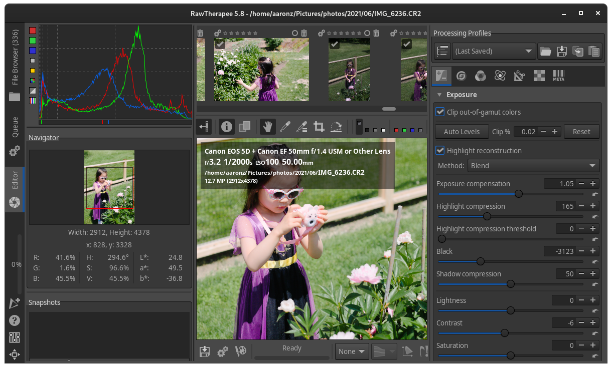
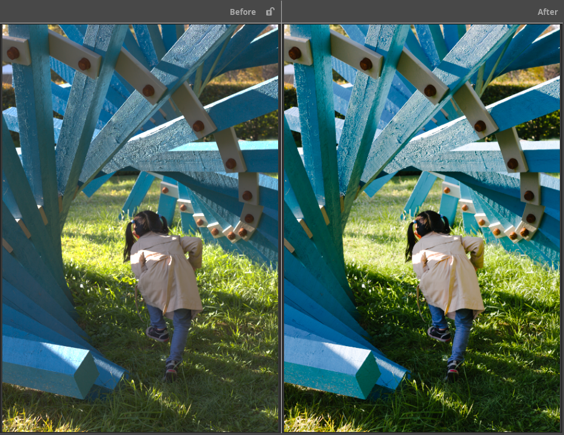
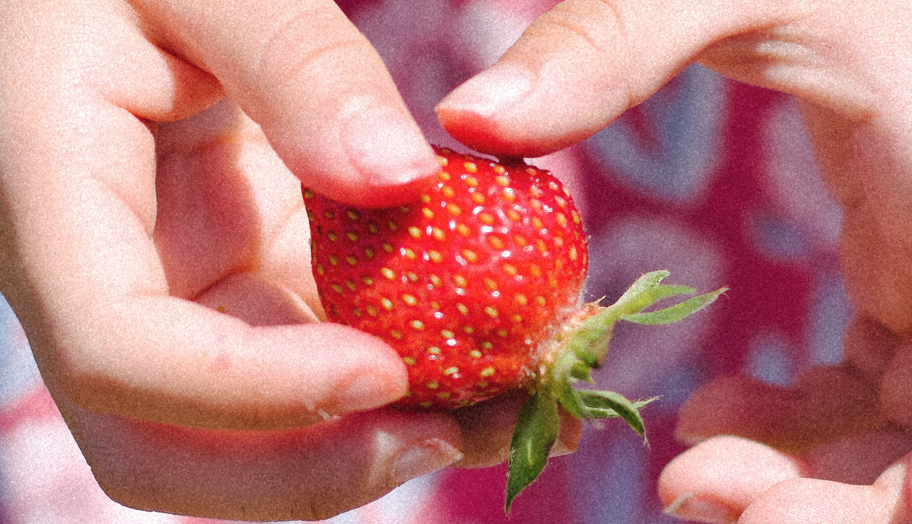

这篇文章介绍我从Mac+Lightroom转换到Linux平台之后，尝试出来的用开源软件处理日常照片的流程。
目前仅用到以下四个开源软件，而且90%的情景下只用到前两个软件。
照片管理依赖特殊软件是一件不靠谱的事情，Google Picassa和Lightroom Classic都是坑。用文件夹管理照片永远是最靠谱的。
运行以下文件，用exiftool将存储卡中的文件导入，按年/月文件夹格式保存。我一般只用RAW格式拍摄。
exiftool "-Directory<DateTimeOriginal" -d "%Y/%m" /run/media/aaronz/EOS_DIGITAL/DCIM/*
如下为文件夹结构的例子：
|-2018 |---03 |---04 |-2019 |---10 |---11 |---12 |-2020 |---07 |---08 |---09 |---10 |-2021 |---08 |---09 |---10
用RawTherapee打开RAW文件，选用合适的曲线即可。RawTherapee内置的标准曲线还原度非常高。 
用RawTherapee的胶片仿真模块，载入胶片的HaldCLUT文件。各种胶片的文件可以在网上下载，也可以从LUT或者Cube文件转换为HaldCLUT。下面的前后对比是用的Pat David的柯达Portra 160文件。 
人像或者街拍添加胶片颗粒可以增强照片的质感。不得不说所谓的质感其实是胶片的噪声。之前用Lightroom可以一键载入胶片颗粒。但是RawTherapee目前为止没有这个功能。研究下来，最简单的办法是如下：
convert $1 ../film/Kodak_Portra_grain_5D.jpg -compose mathematics \\ -define compose:args='0,1,1,-0.5' -composite $1-grain.jpg
下面是一张加了颗粒的照片。
100%局部颗粒细节 
同样，依赖备份软件也是不靠谱的事情。最简单的无外乎在另外一台电脑做一个文件夹镜像备份。
我在地下室用一台旧的笔记本搭建了基于Ubuntu Server的服务器，需要备份时运行以下命令。
rsync -ave ssh mydirectory remote_user@10.10.0.2:/remote/directory/